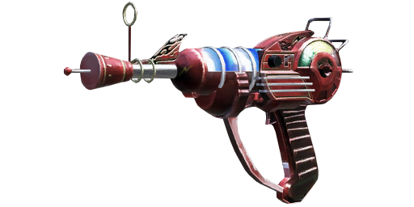

Wonder Weapons
Ray Gun
The Ray Gun is a fully-automatic (semi-automatic in the iOS version) pistol-like weapon that was created by Group 935, appearing in every Zombies map, and as an Easter egg in the Call of Duty: World at War mission "Little Resistance". It has a magazine size of 20 rounds of a plasma ray, with a relatively slow reloading time (slower in Call of Duty: Black Ops III, where the character places the two cartridges one at a time in the gun instead of having them both in the same hand and having them slide down in the weapon). When Pack-a-Punched via the Pack-a-Punch Machine, it becomes Porter's X2 Ray Gun (named for its creator at Treyarch, Max Porter), the splash damage is left unchanged, the magazine is increased to 40 rounds, along with the standard damage, capacity and rate of fire boost. In the Call of Duty: Black Ops version, the reticle is also different colors such as red, green, blue, purple, yellow and orange. PHD Flopper will take away the splash damage.
Wunderwaffe DG-2

The Wunderwaffe DG-2 appears in the later two Call of Duty: World at War Nazi Zombies maps (Shi No Numa and Der Riese) along with their Call of Duty: Black Ops remakes as well as the Der Riese remake in Call of Duty: Black Ops III known as The Giant. It can be obtained in Call of Duty: Black Ops on the map Call of the Dead by completing the Original Characters Trapped Easter egg and killing George Romero after the easter egg is done. It fires blue lightning bolts from a three-round magazine, capable of killing up to 10 zombies at a time, and has infinite damage. Of note is the fact it is one of the slowest reload times of any weapon in both games. When Pack-a-Punched via the Pack-a-Punch Machine, it becomes the Wunderwaffe DG-3 JZ, and can shock up to 24 zombies at a time, the shots also changing in colour to red. Negative effects of the weapon include its high splash damage, electrocuting and weakening players if fired in close proximity to themselves, and the projectiles cancel out the effects of Juggernog should players be hit when the Pack-a-Punched version. In Call of Duty: Black Ops, the Wunderwaffe DG-3 JZ also gains a Golden Camouflage, can only electrocute 10 zombies at once, and no longer negates Juggernog if a player is shocked with it. Both version, due to their damage, remain effective at every round, thus allowing the player to survive during the more difficult higher rounds. The Wunderwaffe DG-2 was created by Dr. Richtofen for the war effort, however, it never saw actual service."Wunderwaffe DG-2" translates to "Wonder Weapon The Bell-2", DG standing for "Die Glocke", which is "the bell" in English.
Thundergun
The Thundergun is a weapon featured in the maps Kino der Toten and Ascension in Call of Duty: Black Ops, also appearing in the revamped version of Nacht der Untoten featured in special editions of the game, or through the Rezurrection map pack. The weapon fires an astonishing amount of compressed air with enough force to kill zombies instantly at close range (due to its infinite damage), and knock zombies down not in the center of the blast. When Pack-a-Punched via the Pack-a-Punch Machine, it becomes the Zeus Cannon, acquiring doubled magazine capacity and reserve ammo, with a slight increase in the effective range. The Thundergun also appears in as an Easter Egg in the Call of Duty: Black Ops campaign mission "Numbers".
Winter's Howl
The Winter's Howl is a weapon featured exclusively in "Five" and Verrückt, but only in Call of Duty Black Ops. The gun has a six round magazine and 24 shots in reserve, firing a projectile capable of freezing zombies on impact, lowering their health drastically and slowing them down. A second shot will encase the affected zombies in ice cubes which will shatter in about a second, killing the zombie. When Pack-a-Punched via the Pack-a-Punch Machine, it becomes the Winter's Fury, gaining a nine-round magazine and 36 in reserve.
Gersch Device
The Gersch Device is a weapon featured in Ascension and Moon. Working as a special grenade, much like the Monkey Bomb, it creates a miniature black hole upon use that sucks nearby zombies in. When active, players, upon to diving-to-prone into the black hole, will be teleported to a random location. Taking a couple of seconds to prime, the grenade lasts around four to five seconds, pulling all zombies in its effective radius to its centre. The affected zombies themselves will be unable to attack the players during this time
V-R11

The V-R11 is a weapon in Call of the Dead. It fires a green blast of energy similar to the Ray Gun. It turns zombies back to humans. When Pack-a-Punched via the Pack-a-Punch Machine, it becomes the V-R11 Lazarus. The new human will run to the nearest body of water and freeze. One exception to this is if the player has not completed the second part of the third step of the Original Characters Trapped Easter egg, in which case the human will run to the green light in the lighthouse. Zombies will pursue him, but only if he's the closest to them (meaning they will chase the player if he's closer). The player can also shoot another player with the V-R11 Lazarus, giving them a red tinted screen and having zombies ignore the player for 10–15 seconds. The player appears to have red lightning coming out of his body, like George A. Romero, except differently colored. It also appears to give the player Insta-Kill capabilities, allowing them to clear out groups of zombies or allowing them to revive downed players without interference.
Scavenger

The Scavenger is a weapon featured in the map Call of the Dead. It is a bolt-action sniper rifle that fires high explosive rounds, similar to the Crossbow, although with a much larger explosion that vaporizes the zombies. It has extremely high damage and accuracy. When Pack-a-Punched via the Pack-a-Punch Machine, it becomes the Hyena Infra-Dead. It has higher ammunition capacity and double the damage per round (compared to its non-upgraded version), as well as an Infrared Scope with Variable Zoom.
31-79 JGb215
The 31-79 JGb215 is a weapon featured in the map, Shangri-La. It fires a blast of energy that shrinks zombies down for a couple of seconds. As long as the zombies are shrunk, any hits or physical contact into them will kill them instantly. When Pack-a-Punched via the Pack-a-Punch Machine, it becomes The Fractalizer, which results in zombies staying shrunk for longer periods of time
Wave Gun
The Wave Gun is a weapon featured in the map, Moon. It fires a purple beam which makes the zombie start to cough up blood, then expand and float up into the air and then explode. When Pack-a-Punched, the Wave Gun becomes the Max Wave Gun. It has a larger blast radius.
The Wave Gun can also be split apart into two separate weapons at will. The Dual Wield version, known as the Zap Gun Dual Wield, electrocutes the zombies, killing them instantly, much like the Wunderwaffe DG-2. When Pack-a-Punched via the Pack-a-Punch Machine, the Dual Wield version becomes the Porter's X2 Zap Gun Dual Wield. It fires blasts like the Porter's X2 Ray Gun, but it still electrocutes only one zombie at a time.
Quantum Entanglement Device
The Quantum Entanglement Device is a Tactical Grenade featured in the Zombies map Moon. When thrown, the QED has no definite effect, as its name would imply - it has been shown to have multiple random effects, varying from doing damage to giving players power-ups to spawning more zombies. It can either produce positive or negative effects, helping or cursing the player.